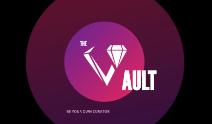

Right now, I am a Junior at the University of Texas at Austin studying Neuroscience where I recently
made the transition from pursuing pre-med to SWE. While I am not a CS major, I try my best to take as many classes relevant to my career goals, and
focus my own time to learn new CS concepts. My long term goals are not fully set in stone, but right now I am interested to learning more
about the data science field and potentially lead into working with Deep Learning technology :)
UT Austin UGCA • Incoming @Amazon →
Paetow High School ‘20 • Baylor University ‘21 • UT Austin ‘24 →
Houston • Austin →
Work/Incoming Experiences
UT Austin
Undergraduate Course Assistant
Elements of Computing CS303E (Intro Python Course)
Amazon (Incoming)
Software Development Engineer Intern
AWS Galaxy Team
Some projects I have developed within my lifetime. Please navigate to the Github link at the top to see
more info about an individual project.

The Vault Music Discovery App
A full stack app that utilizes the Spotify API, python, React, and Expo to create
a discovery page for non-mainstream artists.
Industry: Arts and Entertainment
UTAustinTwitterBot
A Twitter-bot that uses the Twitter API with python to track and filter a hub of
University of Texas events in real time.
Industry: Social Media
SpotifyMusicPlayer
A Spotify-based music player that uses Vanilla HTML, CSS, and JavaScript
that lists and plays R&B music onto its own web application.
Industry: Arts and Entertainment
Boba Tea Data Analysis
A data analysis that utilizes Jupyter Notebook and datasets from Kaggle to
confirm and reject hypothesis towards boba stores located in the Bay Area
Industry: Data Science/Analysis and Visualizations